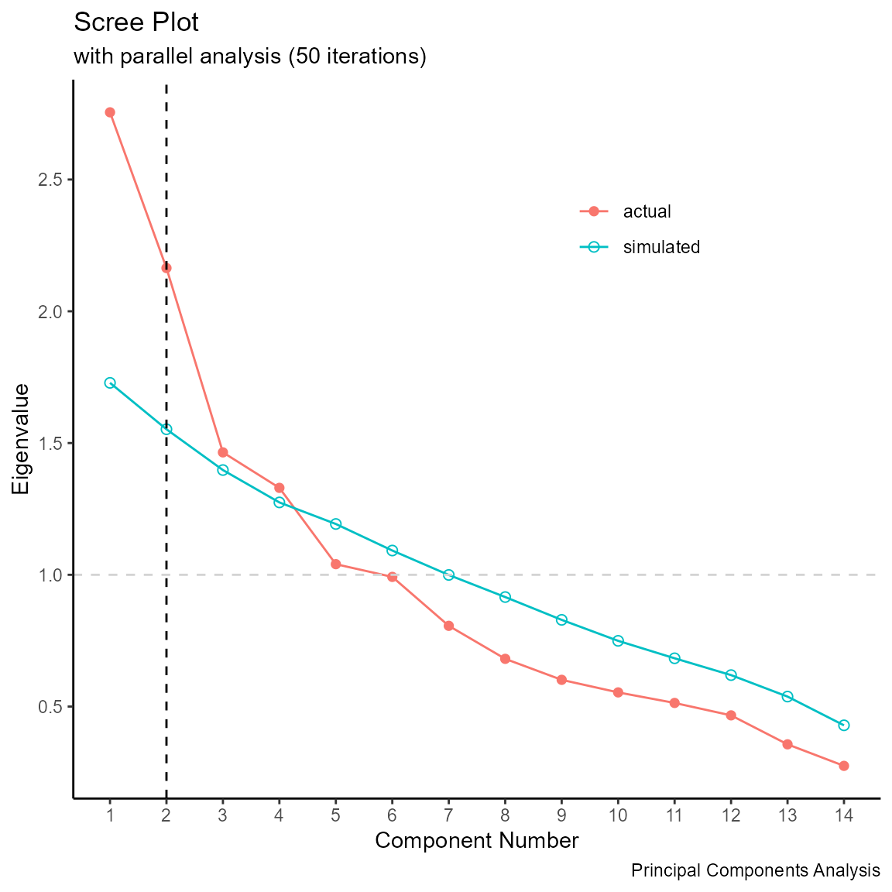
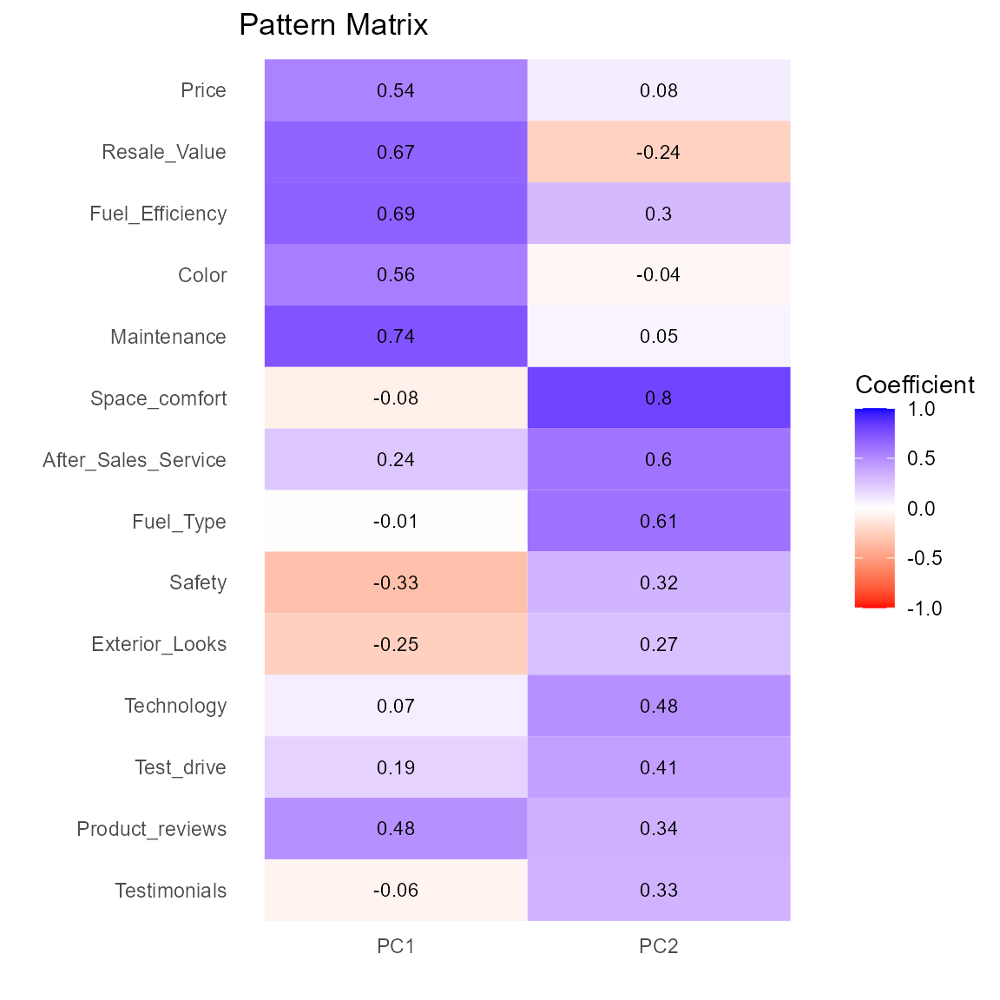
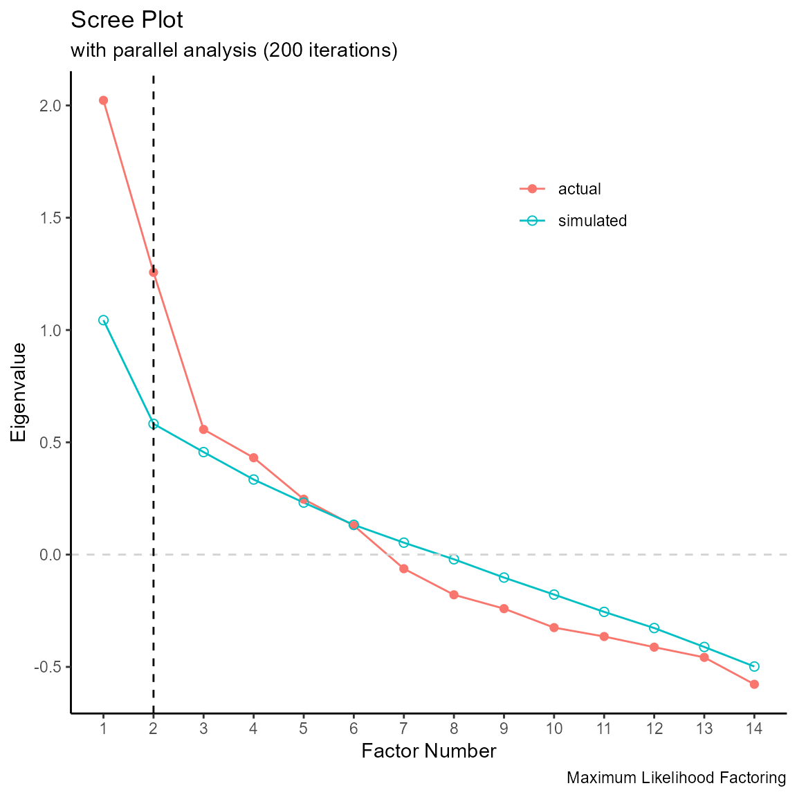
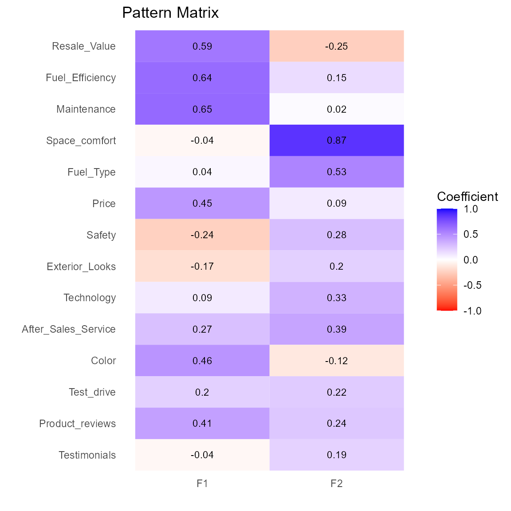

Using the factorAnalysis package
Rob Kabacoff
2019-02-21
factorAnalysis.RmdThe factorAnalysis package provides functions for principal components and common factor analysis. Based on the William Revelle’s comprehensive package, the package provides simplified input, intuitive output, and easily interpretable graphs, making these techniques more accessible to data analysts new to these forms of analysis.
Principal Components Analysis
Let’s perform a principal components analysis on some ratings data. First we’ll import the data into R.
# input data
ratings <- read.csv("https://www.promptcloud.com/wp-content/uploads/2017/02/EFA.csv")
head(ratings)
#> Price Safety Exterior_Looks Space_comfort Technology After_Sales_Service
#> 1 4 4 5 4 3 4
#> 2 3 5 3 3 4 4
#> 3 4 4 3 4 5 5
#> 4 4 4 4 3 3 4
#> 5 5 5 4 4 5 4
#> 6 4 4 5 3 4 5
#> Resale_Value Fuel_Type Fuel_Efficiency Color Maintenance Test_drive
#> 1 5 4 4 2 4 2
#> 2 3 4 3 4 3 2
#> 3 5 4 5 4 5 4
#> 4 5 5 4 4 4 2
#> 5 5 3 4 5 5 5
#> 6 3 4 3 2 3 2
#> Product_reviews Testimonials
#> 1 4 3
#> 2 2 2
#> 3 4 3
#> 4 5 3
#> 5 5 2
#> 6 2 3Next, well create a scree plot of the data.
library(factorAnalysis)
# scree plot
screePlot(ratings)
#>
#> Note: parallel analysis suggests 2 components.
#> Loading required package: ggplot2
The scree plot suggests two components. In the next step, we’ll extract two principal components and rotate them using a varimax rotation.
# extract 2 principal components
fit.pca <- PCA(ratings, nfactor=2, rotate="varimax")
#>
#> Principal Components Analysis
#> Number of Factors: 2 Rotation: varimax
#>
#> Component Structure
#> PC1 PC2 h2
#> Price 0.54 0.08 0.30
#> Safety -0.33 0.32 0.21
#> Exterior_Looks -0.25 0.27 0.13
#> Space_comfort -0.08 0.80 0.65
#> Technology 0.07 0.48 0.24
#> After_Sales_Service 0.24 0.60 0.42
#> Resale_Value 0.67 -0.24 0.51
#> Fuel_Type -0.01 0.61 0.37
#> Fuel_Efficiency 0.69 0.30 0.56
#> Color 0.56 -0.04 0.32
#> Maintenance 0.74 0.05 0.55
#> Test_drive 0.19 0.41 0.20
#> Product_reviews 0.48 0.34 0.34
#> Testimonials -0.06 0.33 0.11
#>
#> PC1 PC2
#> Variance 2.59 2.33
#> Var Explained 0.19 0.17
#> Cum Var Explained 0.19 0.35The two components account for 35% of the variance in the original data. Next, we’ll plot the pattern matrix as both a table and a bar chart.


Finally, we’ll add the component scores to the original data.
# save component scores
mydata <- score(ratings, fit.pca)
head(mydata)
#> Price Safety Exterior_Looks Space_comfort Technology After_Sales_Service
#> 1 4 4 5 4 3 4
#> 2 3 5 3 3 4 4
#> 3 4 4 3 4 5 5
#> 4 4 4 4 3 3 4
#> 5 5 5 4 4 5 4
#> 6 4 4 5 3 4 5
#> Resale_Value Fuel_Type Fuel_Efficiency Color Maintenance Test_drive
#> 1 5 4 4 2 4 2
#> 2 3 4 3 4 3 2
#> 3 5 4 5 4 5 4
#> 4 5 5 4 4 4 2
#> 5 5 3 4 5 5 5
#> 6 3 4 3 2 3 2
#> Product_reviews Testimonials PC1 PC2
#> 1 4 3 -0.3494735 -0.76706234
#> 2 2 2 -1.5464964 -1.58854139
#> 3 4 3 1.2949130 0.09537139
#> 4 5 3 0.5124876 -1.00007813
#> 5 5 2 1.4584077 -0.31851462
#> 6 2 3 -1.6599795 -0.85914096Factor Analysis
In this section, the ratings data are re-analyzed using a maximum likelihood factor analysis.
Again, we’ll start with a scree plot. This time we’ll run 200 simulations. A random number seed is set to assure reproducability.
library(factorAnalysis)
# scree plot
set.seed(1234)
screePlot(ratings, method = "ml", n.iter=200)
#>
#> Note: parallel analysis suggests 4 factors.
The scree plot suggests four factors. In the next step, we’ll extract two factors and rotate them using a promax rotation.
# extract 4 factors
fit.fa <- FA(ratings, nfactor=4, rotate="promax", fm="ml")
#>
#> Maximum Likelihood Factor Analysis
#> Number of Factors: 4 / Rotation: promax
#>
#> Factor Pattern
#> F1 F2 F3 F4 h2
#> Price 0.56 0.10 -0.09 -0.09 0.29
#> Safety -0.24 0.40 -0.19 0.06 0.21
#> Exterior_Looks -0.02 0.03 0.19 -0.43 0.21
#> Space_comfort -0.08 0.78 0.16 -0.20 0.71
#> Technology 0.00 0.35 0.05 0.04 0.13
#> After_Sales_Service 0.18 0.42 0.02 0.02 0.25
#> Resale_Value 0.84 -0.22 -0.25 -0.08 0.61
#> Fuel_Type 0.04 0.59 -0.07 -0.06 0.34
#> Fuel_Efficiency 0.45 0.11 0.22 0.16 0.42
#> Color 0.00 -0.07 0.27 0.90 0.90
#> Maintenance 0.58 0.06 -0.01 0.20 0.45
#> Test_drive 0.04 0.05 0.42 -0.06 0.21
#> Product_reviews 0.24 0.08 0.41 0.00 0.33
#> Testimonials -0.39 -0.09 0.76 0.06 0.49
#>
#> Factor Structure
#> F1 F2 F3 F4
#> Price 0.52 0.16 0.14 0.06
#> Safety -0.23 0.31 -0.17 0.00
#> Exterior_Looks -0.05 0.06 0.17 -0.42
#> Space_comfort 0.05 0.80 0.33 -0.19
#> Technology 0.09 0.36 0.15 0.05
#> After_Sales_Service 0.27 0.46 0.21 0.08
#> Resale_Value 0.70 -0.15 0.00 0.13
#> Fuel_Type 0.09 0.57 0.10 -0.03
#> Fuel_Efficiency 0.58 0.24 0.42 0.28
#> Color 0.32 0.03 0.30 0.91
#> Maintenance 0.64 0.15 0.22 0.35
#> Test_drive 0.19 0.17 0.45 -0.03
#> Product_reviews 0.40 0.23 0.52 0.08
#> Testimonials -0.11 0.06 0.60 -0.01
#>
#> F1 F2 F3 F4
#> SS loadings 1.76 1.51 1.13 1.14
#> Proportion Var 0.13 0.11 0.08 0.08
#> Cumulative Var 0.13 0.23 0.32 0.40
#> Proportion Explained 0.32 0.27 0.20 0.21
#> Cumulative Proportion 0.32 0.59 0.79 1.00
#>
#> Factor Intercorrelations
#> F1 F2 F3 F4
#> F1 1.00 0.16 0.37 0.26
#> F2 0.16 1.00 0.27 0.03
#> F3 0.37 0.27 1.00 0.04
#> F4 0.26 0.03 0.04 1.00The printout includes the factor pattern, the factor structure, and the factor intercorrelations. The four factors account for 32% of the variance in the original data. Factors 1 and 3 have the hightest correlation (0.37).
Next, we’ll plot the pattern matrix as both a table and a bar chart.

Finally, we’ll add the factor scores to the original data.
# save component scores
mydata <- score(ratings, fit.fa)
head(mydata)
#> Price Safety Exterior_Looks Space_comfort Technology After_Sales_Service
#> 1 4 4 5 4 3 4
#> 2 3 5 3 3 4 4
#> 3 4 4 3 4 5 5
#> 4 4 4 4 3 3 4
#> 5 5 5 4 4 5 4
#> 6 4 4 5 3 4 5
#> Resale_Value Fuel_Type Fuel_Efficiency Color Maintenance Test_drive
#> 1 5 4 4 2 4 2
#> 2 3 4 3 4 3 2
#> 3 5 4 5 4 5 4
#> 4 5 5 4 4 4 2
#> 5 5 3 4 5 5 5
#> 6 3 4 3 2 3 2
#> Product_reviews Testimonials F1 F2 F3 F4
#> 1 4 3 0.2506910 -0.4699041 -0.7872106 -1.6945115
#> 2 2 2 -1.5335845 -0.9639319 -2.4591528 0.8789180
#> 3 4 3 1.1462512 0.2886700 -0.1155376 0.4665338
#> 4 5 3 0.5241452 -0.8581296 -0.6791612 0.4143127
#> 5 5 2 1.3108167 0.1322874 -0.1696281 1.3488528
#> 6 2 3 -1.2159854 -1.1217324 -1.7582189 -1.4766228